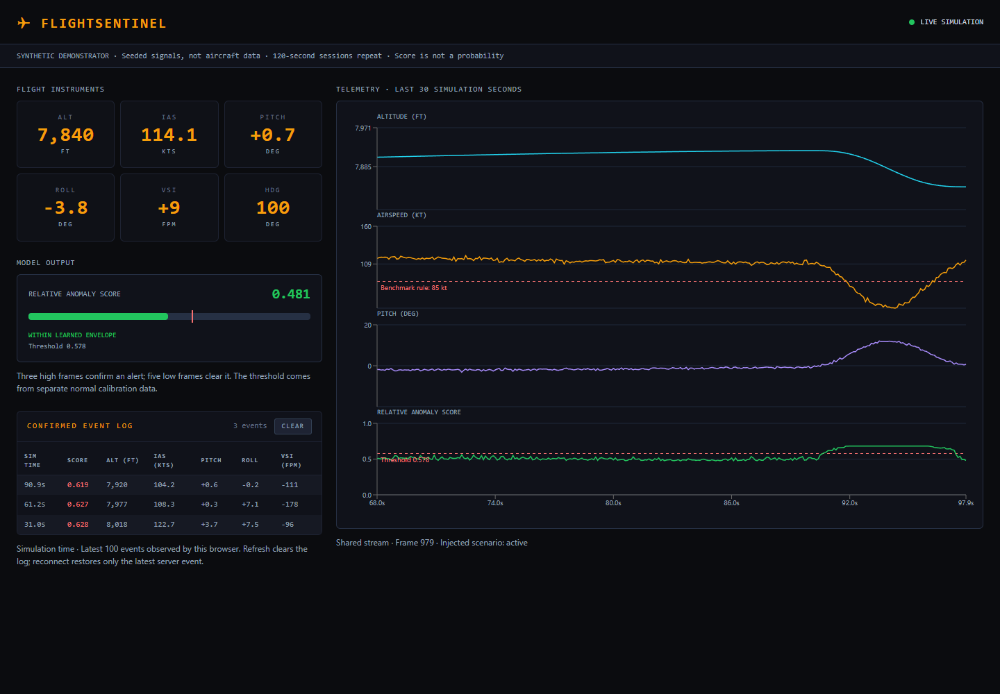

Synthetic telemetry · Portfolio experiment
FlightSentinel
A shared telemetry stream, an anomaly model, and a cockpit-inspired dashboard. Built to explore calibration, real-time delivery, and the limits of a simple detector.
Generated signals only. This is not avionics, a validated stall detector, or software for operational flight decisions.
Loading recorded data…
NO CURRENT SCORE
The engineering problem
An attractive dashboard does not make an anomaly detector useful. The important questions are how often it raises false alarms, what it misses, and whether multiple viewers see the same stream.
One producer, many viewers
A paced server task generates and scores each frame once. Bounded subscriber queues prevent slow clients from building a backlog. Opening another browser does not change simulation speed.
Measured calibration
The threshold is the 99.5th percentile of separate normal calibration data. Test seeds do not select it. Three high frames confirm an alert, five low frames and hysteresis clear it.
The actual application
A React dashboard shows six readouts, four charts, and confirmed events. Missing or stale telemetry is marked unavailable, the connection retries with backoff.

The backend and dashboard run locally. The replay above is a saved, scored recording, it does not perform browser inference.
Results, including the weaknesses
Training seed 42, calibration seed 43, and held-out test seeds 101–103. Test scenarios share the generator and nominal envelope with training. Different noise seeds are not independent flight data.
Loading measured results…
The model handles the combined descent deviation better than isolated bank or airspeed changes. Simple rules can be the stronger detector for obvious single-channel violations. No claim of universal ML superiority is made.
Full evaluation and limitations · Raw metrics · Recorded model output
Architecture and verification
Seeded simulator → Isolation Forest (background inference) → Alert confirmation / server event IDs → Bounded subscriber queues → WebSocket → Validated React state → Instruments / charts / observed event log
Monotonic deadlines target 10 Hz, they do not provide hard real-time guarantees. The health endpoint reports stream freshness and timing overruns. A single server worker owns a simulation. The dashboard repeats an explicitly identified 120-second session rather than simulating an endless descent.
Tests cover reproducibility, altitude/VSI consistency, calibration, shared streaming, disconnect cleanup, stale data, and reconnect disposal. GitHub Actions runs those checks and the frontend build. This is demonstrator verification, not certification.
Run and reproduce
python3 -m venv .venv source .venv/bin/activate python -m pip install -r requirements-dev.txt cd frontend npm ci npm run build cd .. python -m uvicorn backend.main:app --host 127.0.0.1 --port 8000
Python 3.12 and Node.js 22.12+ (or 20.19+). Open localhost:8000. The model trains and calibrates at startup.
python -m pytest tests -q python -m backend.evaluate --replay cd frontend npm test
No real telemetry ingestion, persistent alert store, phase-aware detector, or aircraft-specific validation is implemented. Those are extensions, not existing features.
Diogo Fernandes
VFX Compositor and AI/ML Pipeline Engineer